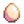
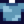

Mayonnaise
| Mayonnaise | ||||||||||||||||||||||||||||||||||
| It looks spreadable. | ||||||||||||||||||||||||||||||||||
| Information | ||||||||||||||||||||||||||||||||||
| Source | Artisan Goods | |||||||||||||||||||||||||||||||||
| Energy / Health |
|
|||||||||||||||||||||||||||||||||
|
||||||||||||||||||||||||||||||||||
| Artisan Goods | ||||||||||||||||||||||||||||||||||
| Equipment | ||||||||||||||||||||||||||||||||||
| Processing Time | ||||||||||||||||||||||||||||||||||
| Ingredients |  Ostrich Egg (1) |
|||||||||||||||||||||||||||||||||
Mayonnaise is an Artisan Good made using the Mayonnaise Machine, taking 3 hours.
Normal sized White and Brown eggs produce regular quality Mayonnaise. Large White and Brown eggs produce gold quality Mayonnaise. The quality of the egg is not a factor in determining the quality of the Mayonnaise.
Ostrich Eggs produce 10 jars of Mayonnaise at once. Unlike chicken eggs, Ostrich Eggs produce Mayonnaise in the same quality as the egg. This is the only way to obtain a silver quality or iridium quality Mayonnaise.
Golden Eggs produce 3 jars of Mayonnaise at gold quality at once, regardless of the quality of the eggs used.
Gifting
| Villager Reactions
| |
|---|---|
| Like | |
| Dislike | |
| Hate | |
Bundles
Mayonnaise is not used in any Bundles.
Recipes
| Image | Name | Description | Ingredients | Energy / Health | Buff(s) | Buff Duration | Recipe Source(s) | Sell Price | |||
|---|---|---|---|---|---|---|---|---|---|---|---|
| Coleslaw | It's light, fresh and very healthy. | N/A | N/A |
|
|||||||
| Fish Taco | It smells delicious. |
|
Tailoring
Mayonnaise is used in the spool of the Sewing Machine with Cloth in the feed to create a  Light Blue Shirt. It is a white dye when used in the spool of the Sewing Machine with a dyeable clothing item in the feed.
Quests
One Mayonnaise may be requested by Blobfish, Catfish, or Spook Fish in Fish Pond quests.
Trivia
- Consuming mayonnaise near a villager will cause the villager to comment on it.
History
- 1.0: Introduced.
- 1.1: Increased value from
 150g to 190g
150g to 190g - 1.4: Dinosaur Eggs now produce Dinosaur Mayonnaise rather than gold-quality Mayonnaise. Can now be used in Tailoring. Can be requested in Fish Pond quests.
- 1.5: Introduced Ostrich Eggs, which produce mayonnaise of the same quality as the egg.
- 1.6: Mayo can now be consumed.